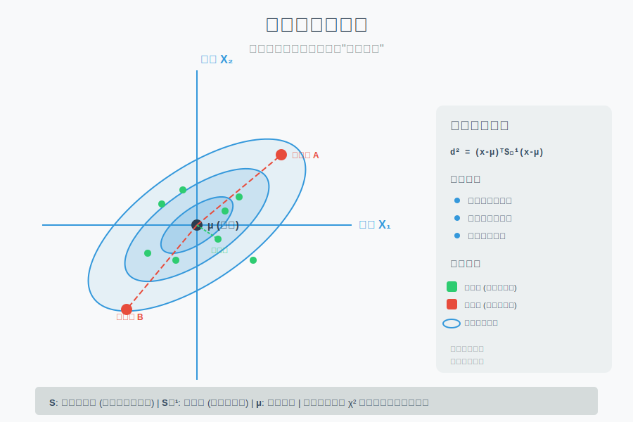
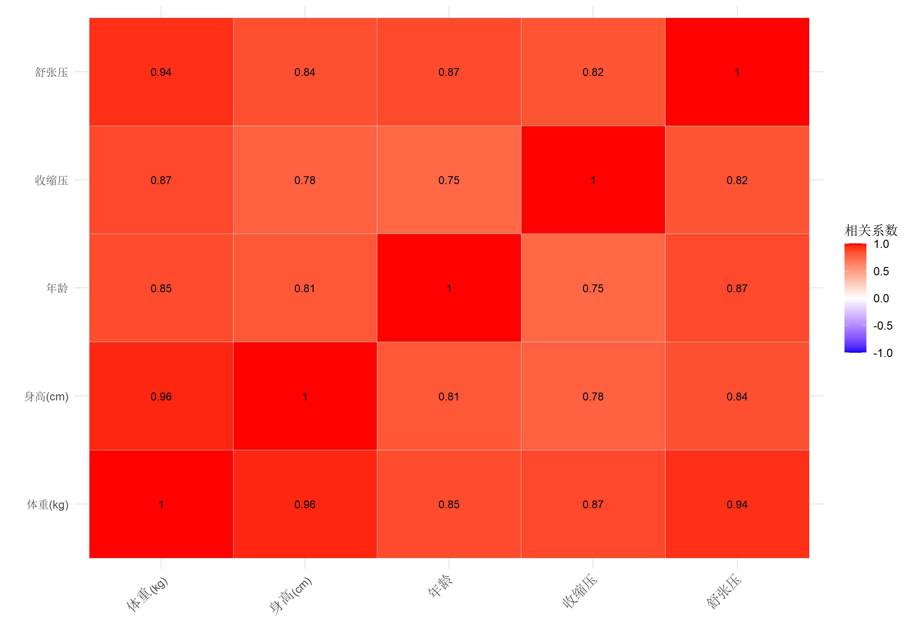
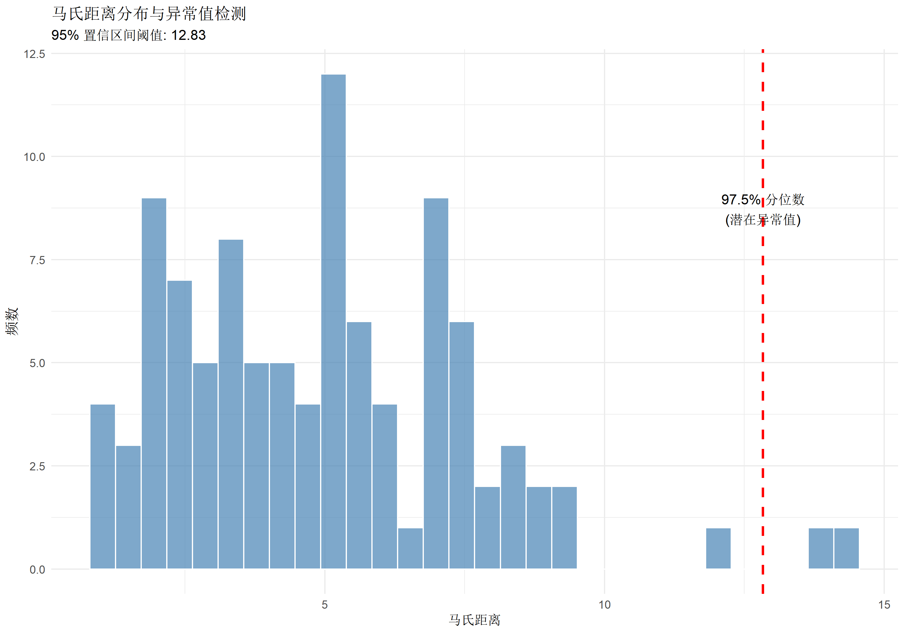
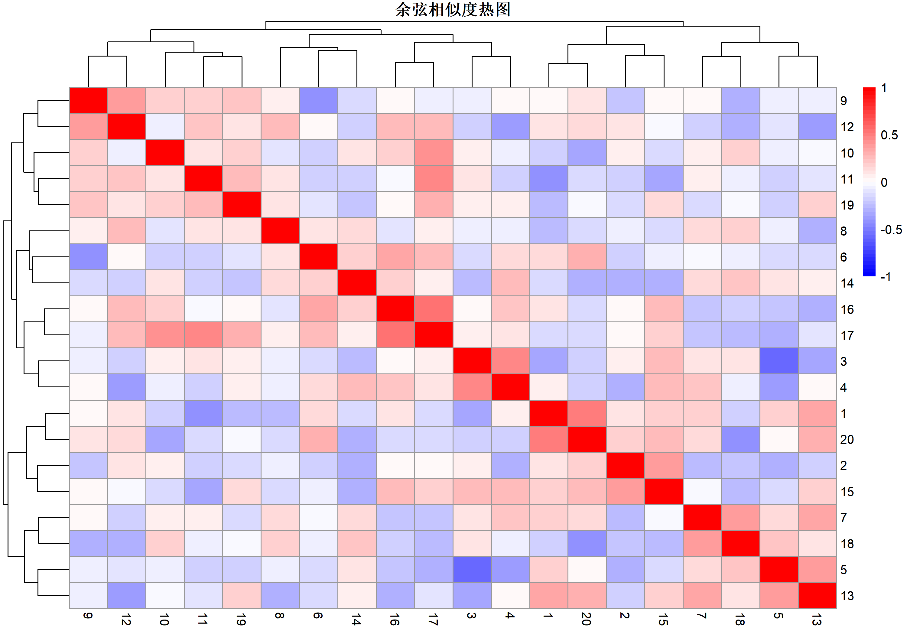
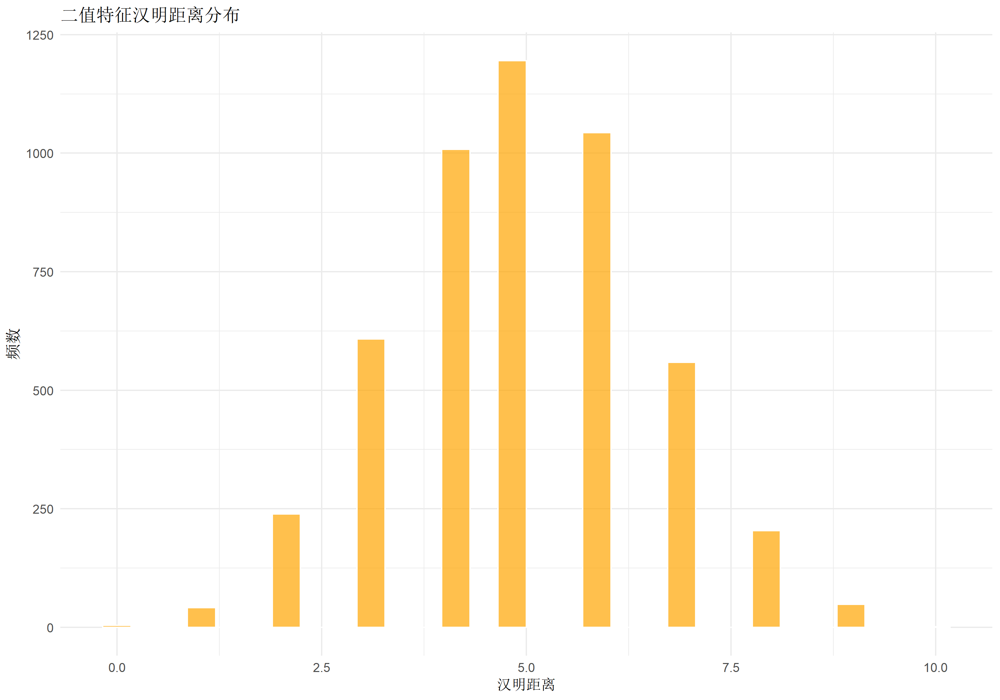
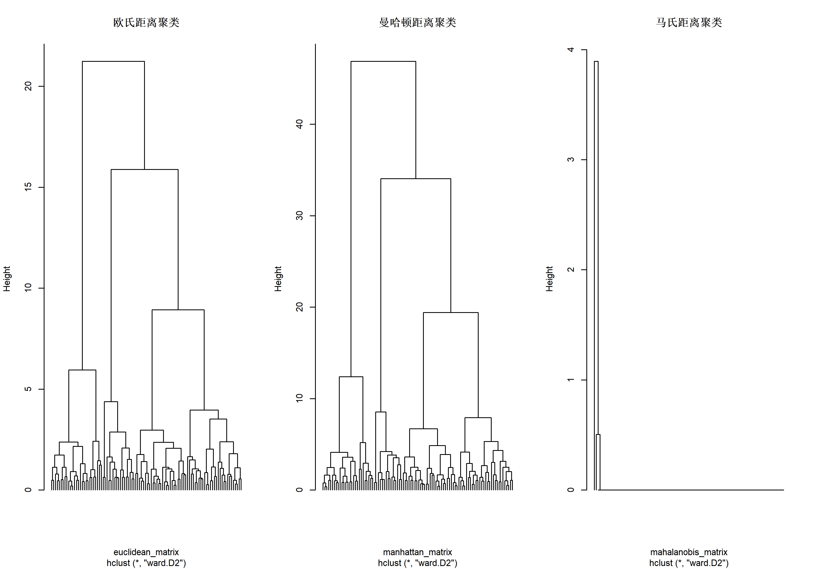

| 距离指标 | 数据类型 | 量纲要求 | 相关性考虑 | 异常值敏感度 | 计算复杂度 |
|---|---|---|---|---|---|
| 欧氏距离 | 连续型 | 需标准化 | 否 | 高 | O(d) |
| 曼哈顿距离 | 连续型/有序 | 建议标准化 | 否 | 中 | O(d) |
| 马氏距离 | 连续型 | 自动标准化 | 是 | 低 | O(d²) |
| 余弦相似度 | 连续型/离散 | 不需标准化 | 否 | 中 | O(d) |
| 汉明距离 | 离散型/二值 | 无 | 否 | 低 | O(d) |
常见距离指标完整指南：从欧氏到马氏距离
数据分析中的相似度度量方法
统计分析方法
基础统计
系统介绍常见距离指标的计算原理、适用场景及 R 语言实现
方法背景与适用场景
什么是距离指标？
零基础通俗解释：想象你在地图上规划路线。从一个点到另一个点，可以走直线（欧氏距离），也可以沿着街道网格走（曼哈顿距离）。在数据分析中，“距离”就是衡量两个数据点”有多像”或”有多远”的方法。距离越小，说明两个对象越相似。
核心应用场景
| 应用场景 | 典型方法 | 示例 |
|---|---|---|
| 聚类分析 | 欧氏、曼哈顿 | K-means、层次聚类 |
| 分类算法 | 欧氏、马氏 | K-近邻分类器 |
| 异常检测 | 马氏距离、欧氏 | 多变量异常值识别 |
| 降维分析 | 欧氏 | PCA、t-SNE |
| 文本分析 | 余弦相似度、Jaccard | 文档相似度计算 |
| 图像识别 | 欧氏、汉明距离 | 特征向量匹配 |
| 推荐系统 | 余弦相似度 | 用户行为相似性 |
| 相关性分析 | 相关距离 | 变量关系度量 |
常见距离指标对比

核心概念与模型入门
基础数学定义
对于两个 \(d\) 维向量 \(\mathbf{x} = (x_1, x_2, \ldots, x_d)\) 和 \(\mathbf{y} = (y_1, y_2, \ldots, y_d)\)：
1. 欧氏距离 (Euclidean Distance)
直观理解：两点间的直线距离，就像用直尺测量。
\[d(\mathbf{x}, \mathbf{y}) = \sqrt{\sum_{i=1}^{d} (x_i - y_i)^2}\]
特点： - 最常用的距离度量 - 适用于各维度量纲一致的数据 - 对异常值敏感
2. 曼哈顿距离 (Manhattan Distance)
直观理解：城市街区距离，只能沿坐标轴方向移动。
\[d(\mathbf{x}, \mathbf{y}) = \sum_{i=1}^{d} |x_i - y_i|\]
特点： - 对异常值比欧氏距离更稳健 - 适用于网格化数据（如城市地图）
3. 切比雪夫距离 (Chebyshev Distance)
直观理解：国际象棋中”王”的移动方式，每次可以在任意方向移动一格。
\[d(\mathbf{x}, \mathbf{y}) = \max_{1 \leq i \leq d} |x_i - y_i|\]
特点： - 只关心最大差异维度 - 适用于需要捕捉极端差异的场景
4. 闵可夫斯基距离 (Minkowski Distance)
直观理解：欧氏和曼哈顿距离的推广，通过参数 \(p\) 调整。
\[d(\mathbf{x}, \mathbf{y}) = \left(\sum_{i=1}^{d} |x_i - y_i|^p\right)^{1/p}\]
特殊情况： - \(p = 1\)：曼哈顿距离 - \(p = 2\)：欧氏距离 - \(p = \infty\)：切比雪夫距离
5. 马氏距离 (Mahalanobis Distance)
直观理解：考虑变量间相关性和方差的”统计距离”。就像在拥挤的房间里找”远”的人，不是看物理距离，而是看”反常程度”。
\[d(\mathbf{x}, \mathbf{y}) = \sqrt{(\mathbf{x} - \mathbf{y})^T \mathbf{S}^{-1} (\mathbf{x} - \mathbf{y})}\]
其中 \(\mathbf{S}\) 是协方差矩阵。
特点： - 自动标准化数据 - 考虑变量间相关性 - 对异常值检测更准确

6. 余弦相似度 (Cosine Similarity)
直观理解：衡量两个向量的方向相似性，不考虑长度差异。就像比较两支笔的朝向，不管长短。
\[\text{similarity}(\mathbf{x}, \mathbf{y}) = \cos(\theta) = \frac{\mathbf{x} \cdot \mathbf{y}}{\|\mathbf{x}\| \|\mathbf{y}\|} = \frac{\sum_{i=1}^{d} x_i y_i}{\sqrt{\sum_{i=1}^{d} x_i^2} \sqrt{\sum_{i=1}^{d} y_i^2}}\]
特点： - 范围在 \([-1, 1]\) 之间 - 适合文本分析、推荐系统 - 对向量长度不敏感
7. 汉明距离 (Hamming Distance)
直观理解：两个字符串有多少个位置不同。比如 “kitten” 和 “sitting” 有 3 个不同。
\[d(\mathbf{x}, \mathbf{y}) = \sum_{i=1}^{d} I(x_i \neq y_i)\]
其中 \(I(\cdot)\) 是指示函数。
特点： - 只适用于离散数据 - 常用于字符串比较、错误检测
8. Jaccard 距离 (Jaccard Distance)
直观理解：衡量两个集合的相似性，基于交集和并集。
\[d(A, B) = 1 - \frac{|A \cap B|}{|A \cup B|} = 1 - \text{Jaccard 相似系数}\]
特点： - 范围在 \([0, 1]\) 之间 - 适用于集合数据、二元特征 - 常用于文本相似度（单词集合）
9. 相关距离 (Correlation Distance)
直观理解：基于相关系数的距离。
\[d(\mathbf{x}, \mathbf{y}) = 1 - \text{corr}(\mathbf{x}, \mathbf{y})\]
特点： - 范围在 \([0, 2]\) 之间 - 适合衡量变量间的模式相似性 - 基因表达分析常用
模型假设与前提条件
各距离指标的假设
关键假设与检验
1. 数据标准化（对于欧氏、曼哈顿距离）
假设：各维度具有相同的量纲和尺度。
检验方法： - 检查各变量的均值和方差 - 绘制箱线图查看分布差异
违背后果： - 量纲大的变量主导距离计算 - 结果被某些维度”绑架”
2. 马氏距离的协方差矩阵正定性
假设：协方差矩阵是可逆的（正定矩阵）。
检验方法：
# 检查协方差矩阵是否正定
is_positive_definite <- function(S) {
eigenvalues <- eigen(S, symmetric = TRUE)$values
all(eigenvalues > 0)
}违背后果： - 无法计算逆矩阵 - 存在完全线性相关的变量
3. 余弦相似度的向量非零假设
假设：向量长度不为零。
违背后果： - 分母为零，无法计算 - 需要特殊处理零向量
如何选择合适的距离指标

选择指南：
| 数据特征 | 推荐距离 | 理由 |
|---|---|---|
| 连续变量、量纲一致 | 欧氏距离 | 直观、计算简单 |
| 连续变量、存在异常值 | 曼哈顿距离 | 更稳健 |
| 变量间有相关性 | 马氏距离 | 考虑协方差 |
| 文本数据、向量长度差异大 | 余弦相似度 | 关注方向 |
| 分类/二值数据 | 汉明/Jaccard | 专门设计 |
| 网格化数据 | 曼哈顿/切比雪夫 | 符合物理意义 |
数据准备
模拟数据集
让我们创建一个包含多种类型特征的模拟数据集：
# 设置随机种子
set.seed(2026)
# 1. 基础数据：连续型变量
n <- 100 # 样本量
d <- 5 # 维度
# 生成具有相关性的多元正态数据
library(MASS)
mu <- c(50, 165, 70, 120, 80) # 均值向量
Sigma <- matrix(c(
10, 15, 8, 5, 6,
15, 25, 12, 7, 8,
8, 12, 9, 4, 5,
5, 7, 4, 3, 3,
6, 8, 5, 3, 4
), nrow = 5, byrow = TRUE)
# 添加一些噪声确保正定性
Sigma <- Sigma + diag(0.1, 5)
data_continuous <- mvrnorm(n, mu, Sigma)
colnames(data_continuous) <- c("体重(kg)", "身高(cm)", "年龄", "收缩压", "舒张压")
# 2. 标准化数据（用于距离计算）
data_scaled <- scale(data_continuous)
# 3. 添加类别标签
data_scaled <- as.data.frame(data_scaled)
data_scaled$group <- sample(c("A", "B", "C"), n, replace = TRUE)
# 4. 创建二值数据（用于汉明/Jaccard距离）
binary_data <- matrix(sample(0:1, n * 10, replace = TRUE), n, 10)
colnames(binary_data) <- paste0("Feature_", 1:10)
# 5. 创建文本向量（用于余弦相似度）
text_vectors <- matrix(rnorm(n * 20), n, 20)
colnames(text_vectors) <- paste0("Word_", 1:20)
# 显示前几行
head(data_scaled) 体重(kg) 身高(cm) 年龄 收缩压 舒张压 group
1 0.5625007 0.85569713 0.2312359 0.1946672 -0.020956788 C
2 -0.8688507 -1.12414343 -0.6888472 -0.6410958 -0.613525568 C
3 0.0816926 0.20111741 0.4367446 0.4801330 0.137072839 C
4 -0.2657137 -0.09761617 0.9571904 -0.8129577 -0.006108138 C
5 -0.7442774 -0.34143255 -0.7451297 -0.4678319 -0.906597170 C
6 -2.2723667 -2.38384409 -2.6802320 -1.3709673 -1.677314794 C数据探索
# 查看数据结构
str(data_scaled)'data.frame': 100 obs. of 6 variables:
$ 体重(kg): num 0.5625 -0.8689 0.0817 -0.2657 -0.7443 ...
$ 身高(cm): num 0.8557 -1.1241 0.2011 -0.0976 -0.3414 ...
$ 年龄 : num 0.231 -0.689 0.437 0.957 -0.745 ...
$ 收缩压 : num 0.195 -0.641 0.48 -0.813 -0.468 ...
$ 舒张压 : num -0.02096 -0.61353 0.13707 -0.00611 -0.9066 ...
$ group : chr "C" "C" "C" "C" ...# 查看各变量分布
summary(data_scaled[, 1:5]) 体重(kg) 身高(cm) 年龄 收缩压
Min. :-2.5394 Min. :-2.554252 Min. :-2.68023 Min. :-1.94885
1st Qu.:-0.6964 1st Qu.:-0.741448 1st Qu.:-0.70556 1st Qu.:-0.80144
Median :-0.1038 Median : 0.003071 Median : 0.03906 Median : 0.07783
Mean : 0.0000 Mean : 0.000000 Mean : 0.00000 Mean : 0.00000
3rd Qu.: 0.6068 3rd Qu.: 0.660840 3rd Qu.: 0.67801 3rd Qu.: 0.59737
Max. : 2.3221 Max. : 2.365275 Max. : 2.64081 Max. : 2.40411
舒张压
Min. :-2.3585
1st Qu.:-0.6619
Median :-0.1132
Mean : 0.0000
3rd Qu.: 0.6835
Max. : 2.6439 # 检查变量相关性
cor_matrix <- cor(data_scaled[, 1:5])
round(cor_matrix, 2) 体重(kg) 身高(cm) 年龄 收缩压 舒张压
体重(kg) 1.00 0.96 0.85 0.87 0.94
身高(cm) 0.96 1.00 0.81 0.78 0.84
年龄 0.85 0.81 1.00 0.75 0.87
收缩压 0.87 0.78 0.75 1.00 0.82
舒张压 0.94 0.84 0.87 0.82 1.00# 可视化相关性
library(ggplot2)
library(reshape2)
cor_melt <- melt(cor_matrix)
ggplot(cor_melt, aes(x = Var1, y = Var2, fill = value)) +
geom_tile(color = "white") +
geom_text(aes(label = round(value, 2)), size = 3) +
scale_fill_gradient2(low = "blue", high = "red", mid = "white",
midpoint = 0, limit = c(-1, 1)) +
theme_minimal() +
labs(x = "", y = "", fill = "相关系数") +
theme(axis.text.x = element_text(angle = 45, hjust = 1))
完整分析流程
步骤1：计算两点间的各种距离
# 选择两个样本点
point_a <- as.numeric(data_scaled[1, 1:5])
point_b <- as.numeric(data_scaled[2, 1:5])
cat("点A:", round(point_a, 3), "\n")点A: 0.563 0.856 0.231 0.195 -0.021
cat("点B:", round(point_b, 3), "\n\n")点B: -0.869 -1.124 -0.689 -0.641 -0.614
# 1. 欧氏距离
euclidean_dist <- sqrt(sum((point_a - point_b)^2))
cat("1. 欧氏距离:", round(euclidean_dist, 4), "\n")- 欧氏距离: 2.8044
# 2. 曼哈顿距离
manhattan_dist <- sum(abs(point_a - point_b))
cat("2. 曼哈顿距离:", round(manhattan_dist, 4), "\n")- 曼哈顿距离: 5.7596
# 3. 切比雪夫距离
chebyshev_dist <- max(abs(point_a - point_b))
cat("3. 切比雪夫距离:", round(chebyshev_dist, 4), "\n")- 切比雪夫距离: 1.9798
# 4. 闵可夫斯基距离（p=1.5）
minkowski_dist <- sum(abs(point_a - point_b)^1.5)^(1/1.5)
cat("4. 闵可夫斯基距离(p=1.5):", round(minkowski_dist, 4), "\n")- 闵可夫斯基距离(p=1.5): 3.5189
# 5. 马氏距离
S <- cov(data_scaled[, 1:5])
mahalanobis_dist <- sqrt(as.numeric(t(point_a - point_b) %*% solve(S) %*% (point_a - point_b)))
cat("5. 马氏距离:", round(mahalanobis_dist, 4), "\n")- 马氏距离: 2.8105
# 6. 余弦相似度（转换为距离）
cosine_sim <- sum(point_a * point_b) / (sqrt(sum(point_a^2)) * sqrt(sum(point_b^2)))
cosine_dist <- 1 - cosine_sim
cat("6. 余弦距离(1-相似度):", round(cosine_dist, 4), "\n")- 余弦距离(1-相似度): 1.8902
cat(" 余弦相似度:", round(cosine_sim, 4), "\n")余弦相似度: -0.8902
# 7. 相关距离
cor_dist <- 1 - cor(point_a, point_b)
cat("7. 相关距离:", round(cor_dist, 4), "\n")- 相关距离: 1.9755
步骤2：使用 R 包计算距离矩阵
# 创建数据矩阵
data_matrix <- as.matrix(data_scaled[, 1:5])
# 1. 使用 stats 包计算欧氏距离
euclidean_matrix <- dist(data_matrix, method = "euclidean")
# 2. 计算曼哈顿距离
manhattan_matrix <- dist(data_matrix, method = "manhattan")
# 3. 计算最大距离（切比雪夫）
maximum_matrix <- dist(data_matrix, method = "maximum")
# 4. 计算闵可夫斯基距离（p=1.5）
minkowski_matrix <- dist(data_matrix, method = "minkowski", p = 1.5)
# 查看距离矩阵（前10×10）
round(as.matrix(euclidean_matrix)[1:10, 1:10], 2) 1 2 3 4 5 6 7 8 9 10
1 0.00 2.80 0.90 1.77 2.31 5.67 2.25 3.49 1.25 1.91
2 2.80 0.00 2.40 2.13 0.86 3.03 1.09 1.59 2.53 1.80
3 0.90 2.40 0.00 1.47 2.09 5.35 1.67 3.44 0.73 1.31
4 1.77 2.13 1.47 0.00 2.03 5.06 1.37 2.82 1.21 1.80
5 2.31 0.86 2.09 2.03 0.00 3.41 1.28 1.60 2.41 1.91
6 5.67 3.03 5.35 5.06 3.41 0.00 4.02 2.80 5.55 4.61
7 2.25 1.09 1.67 1.37 1.28 4.02 0.00 2.39 1.75 1.47
8 3.49 1.59 3.44 2.82 1.60 2.80 2.39 0.00 3.54 3.05
9 1.25 2.53 0.73 1.21 2.41 5.55 1.75 3.54 0.00 1.26
10 1.91 1.80 1.31 1.80 1.91 4.61 1.47 3.05 1.26 0.00步骤3：马氏距离计算（特殊处理）
# 计算每个点到中心的马氏距离
data_center <- colMeans(data_matrix)
mahalanobis_all <- mahalanobis(data_matrix, data_center, cov(data_matrix))
# 按马氏距离排序
mahalanobis_df <- data.frame(
Index = 1:n,
Mahalanobis_Distance = mahalanobis_all,
Group = data_scaled$group
)
mahalanobis_df <- mahalanobis_df[order(mahalanobis_df$Mahalanobis_Distance, decreasing = TRUE), ]
# 显示马氏距离最大的5个点
head(mahalanobis_df, 5) Index Mahalanobis_Distance Group
22 22 14.329026 C
6 6 14.046073 C
93 93 12.197886 C
77 77 9.410634 C
15 15 9.382263 B# 可视化马氏距离分布
ggplot(mahalanobis_df, aes(x = Mahalanobis_Distance)) +
geom_histogram(bins = 30, fill = "steelblue", color = "white", alpha = 0.7) +
geom_vline(xintercept = qchisq(0.975, df = 5), color = "red", linetype = "dashed",
size = 1) +
annotate("text", x = qchisq(0.975, df = 5), y = 8,
label = "97.5% 分位数\n(潜在异常值)", hjust = 0.5, vjust = -0.5) +
theme_minimal() +
labs(x = "马氏距离", y = "频数",
title = "马氏距离分布与异常值检测",
subtitle = paste("95% 置信区间阈值:", round(qchisq(0.975, df = 5), 2)))
步骤4：余弦相似度计算
# 计算所有文本向量之间的余弦相似度
cosine_matrix <- matrix(0, n, n)
rownames(cosine_matrix) <- colnames(cosine_matrix) <- 1:n
for (i in 1:n) {
for (j in i:n) {
sim <- sum(text_vectors[i, ] * text_vectors[j, ]) /
(sqrt(sum(text_vectors[i, ]^2)) * sqrt(sum(text_vectors[j, ]^2)))
cosine_matrix[i, j] <- cosine_matrix[j, i] <- sim
}
}
# 转换为距离
cosine_distance_matrix <- 1 - cosine_matrix
# 显示部分相似度矩阵
round(cosine_matrix[1:5, 1:5], 3) 1 2 3 4 5
1 1.000 0.116 -0.356 0.059 0.169
2 0.116 1.000 0.048 -0.318 -0.297
3 -0.356 0.048 1.000 0.463 -0.589
4 0.059 -0.318 0.463 1.000 -0.363
5 0.169 -0.297 -0.589 -0.363 1.000# 可视化余弦相似度
library(pheatmap)
# 选择前20个样本
cosine_subset <- cosine_matrix[1:20, 1:20]
# 使用pheatmap绘制
pheatmap(cosine_subset,
display_numbers = FALSE,
color = colorRampPalette(c("blue", "white", "red"))(50),
breaks = seq(-1, 1, length.out = 51),
main = "余弦相似度热图",
cluster_rows = TRUE,
cluster_cols = TRUE)
步骤5：汉明距离计算（二值数据）
# 计算二值数据的汉明距离
hamming_matrix <- dist(binary_data, method = "manhattan")
# 查看汉明距离矩阵
round(as.matrix(hamming_matrix)[1:10, 1:10], 0) 1 2 3 4 5 6 7 8 9 10
1 0 7 2 3 6 6 4 3 5 7
2 7 0 7 6 5 7 7 6 6 6
3 2 7 0 5 4 4 4 3 3 7
4 3 6 5 0 5 5 3 4 4 6
5 6 5 4 5 0 4 6 7 5 5
6 6 7 4 5 4 0 2 5 3 3
7 4 7 4 3 6 2 0 5 3 5
8 3 6 3 4 7 5 5 0 4 6
9 5 6 3 4 5 3 3 4 0 6
10 7 6 7 6 5 3 5 6 6 0# 可视化汉明距离分布
hamming_values <- as.vector(hamming_matrix)
ggplot(data.frame(Hamming = hamming_values), aes(x = Hamming)) +
geom_histogram(bins = 30, fill = "orange", color = "white", alpha = 0.7) +
theme_minimal() +
labs(x = "汉明距离", y = "频数", title = "二值特征汉明距离分布")
步骤6：Jaccard 距离计算
# 使用 proxy 包计算 Jaccard 距离（如果已安装）
if (!require("proxy")) install.packages("proxy")
library(proxy)
# 将二值数据转换为逻辑矩阵
binary_logical <- binary_data == 1
# 计算 Jaccard 距离
jaccard_matrix <- proxy::dist(binary_logical, method = "Jaccard")
# 查看部分矩阵
round(as.matrix(jaccard_matrix)[1:10, 1:10], 3) 1 2 3 4 5 6 7 8 9 10
1 0.000 0.700 0.286 0.429 0.667 0.667 0.500 0.429 0.625 0.778
2 0.700 0.000 0.700 0.667 0.556 0.700 0.700 0.667 0.667 0.667
3 0.286 0.700 0.000 0.625 0.500 0.500 0.500 0.429 0.429 0.778
4 0.429 0.667 0.625 0.000 0.625 0.625 0.429 0.571 0.571 0.750
5 0.667 0.556 0.500 0.625 0.000 0.500 0.667 0.778 0.625 0.625
6 0.667 0.700 0.500 0.625 0.500 0.000 0.286 0.625 0.429 0.429
7 0.500 0.700 0.500 0.429 0.667 0.286 0.000 0.625 0.429 0.625
8 0.429 0.667 0.429 0.571 0.778 0.625 0.625 0.000 0.571 0.750
9 0.625 0.667 0.429 0.571 0.625 0.429 0.429 0.571 0.000 0.750
10 0.778 0.667 0.778 0.750 0.625 0.429 0.625 0.750 0.750 0.000步骤7：距离指标比较与可视化
# 比较不同距离指标下前5个点之间的距离
points_to_compare <- 1:5
comparison_df <- data.frame(
Pair = character(),
Euclidean = numeric(),
Manhattan = numeric(),
Chebyshev = numeric(),
Minkowski = numeric(),
stringsAsFactors = FALSE
)
for (i in points_to_compare) {
for (j in points_to_compare) {
if (i < j) {
comparison_df <- rbind(comparison_df, data.frame(
Pair = paste0(i, "-", j),
Euclidean = euclidean_matrix[cbind(i, j)],
Manhattan = manhattan_matrix[cbind(i, j)],
Chebyshev = maximum_matrix[cbind(i, j)],
Minkowski = minkowski_matrix[cbind(i, j)]
))
}
}
}
print(comparison_df) Pair Euclidean Manhattan Chebyshev Minkowski
1 1-2 2.8044119 5.759607 1.9798406 3.518891
2 1-2 0.8990823 1.784392 0.6545797 1.111289
3 1-3 2.8044119 5.759607 1.9798406 3.518891
4 1-3 1.7712379 3.529956 1.0076249 2.223846
5 1-4 2.8044119 5.759607 1.9798406 3.518891
6 1-4 2.3059364 5.028413 1.3067781 2.978777
7 1-5 2.8044119 5.759607 1.9798406 3.518891
8 1-5 5.6747228 12.207869 3.2395412 7.284918
9 2-3 0.8990823 1.784392 0.6545797 1.111289
10 2-3 1.7712379 3.529956 1.0076249 2.223846
11 2-4 0.8990823 1.784392 0.6545797 1.111289
12 2-4 2.3059364 5.028413 1.3067781 2.978777
13 2-5 0.8990823 1.784392 0.6545797 1.111289
14 2-5 5.6747228 12.207869 3.2395412 7.284918
15 3-4 1.7712379 3.529956 1.0076249 2.223846
16 3-4 2.3059364 5.028413 1.3067781 2.978777
17 3-5 1.7712379 3.529956 1.0076249 2.223846
18 3-5 5.6747228 12.207869 3.2395412 7.284918
19 4-5 2.3059364 5.028413 1.3067781 2.978777
20 4-5 5.6747228 12.207869 3.2395412 7.284918# 可视化不同距离指标的差异
comparison_melt <- melt(comparison_df, id.vars = "Pair")
ggplot(comparison_melt, aes(x = Pair, y = value, fill = variable)) +
geom_bar(stat = "identity", position = "dodge") +
scale_fill_brewer(palette = "Set2") +
theme_minimal() +
labs(x = "样本对", y = "距离值", fill = "距离指标",
title = "不同距离指标计算结果对比") +
theme(axis.text.x = element_text(angle = 45, hjust = 1))
步骤8：聚类分析应用
# 使用不同距离进行层次聚类
# 1. 基于欧氏距离的聚类
hclust_euclidean <- hclust(euclidean_matrix, method = "ward.D2")
# 2. 基于曼哈顿距离的聚类
hclust_manhattan <- hclust(manhattan_matrix, method = "ward.D2")
# 3. 基于马氏距离的聚类（需要手动计算）
mahalanobis_matrix <- as.dist(matrix(0, n, n))
for (i in 1:(n-1)) {
for (j in (i+1):n) {
d <- mahalanobis(data_matrix[i, ], data_matrix[j, ], cov(data_matrix))
mahalanobis_matrix[cbind(i, j)] <- sqrt(d)
}
}
hclust_mahalanobis <- hclust(mahalanobis_matrix, method = "ward.D2")
# 绘制聚类树
par(mfrow = c(1, 3))
plot(hclust_euclidean, main = "欧氏距离聚类", labels = FALSE, hang = -1)
plot(hclust_manhattan, main = "曼哈顿距离聚类", labels = FALSE, hang = -1)
plot(hclust_mahalanobis, main = "马氏距离聚类", labels = FALSE, hang = -1)
par(mfrow = c(1, 1))步骤9：K-近邻分类器应用
# 创建训练集和测试集
set.seed(2026)
train_idx <- sample(1:n, size = 80)
test_idx <- setdiff(1:n, train_idx)
train_data <- data_scaled[train_idx, ]
test_data <- data_scaled[test_idx, ]
# 使用 class 包的 KNN
if (!require("class")) install.packages("class")
library(class)
# 预测（k=3）
k <- 3
knn_pred <- knn(train = train_data[, 1:5],
test = test_data[, 1:5],
cl = train_data$group,
k = k)
# 计算准确率
accuracy <- mean(knn_pred == test_data$group)
cat("KNN 分类准确率 (k=", k, "):", round(accuracy * 100, 2), "%\n")KNN 分类准确率 (k= 3 ): 30 %# 混淆矩阵
confusion_matrix <- table(Predicted = knn_pred, Actual = test_data$group)
print(confusion_matrix) Actual
Predicted A B C
A 1 1 3
B 3 4 2
C 4 1 1结果解读与报告
距离指标的统计意义
1. 马氏距离与异常值检测
马氏距离服从 \(\chi^2\) 分布，自由度为数据维度。常用阈值： - \(95\%\) 置信水平：\(\chi^2_{0.95, df}\) - \(97.5\%\) 置信水平：\(\chi^2_{0.975, df}\) - \(99\%\) 置信水平：\(\chi^2_{0.99, df}\)
解读： - 超过阈值的点可视为潜在异常值 - 但需结合领域知识判断是否为真实异常
2. 余弦相似度解读
| 余弦相似度 | 关系描述 |
|---|---|
| \(\approx 1\) | 几乎相同方向（高度相似） |
| \(\approx 0\) | 正交（不相关） |
| \(\approx -1\) | 方向相反（高度负相关） |
3. 汉明距离解读
对于长度为 \(L\) 的二值字符串，汉明距离 \(d\)： - 最小值：0（完全相同） - 最大值：\(L\)（完全不同） - 比例：\(d/L\) 表示差异程度
论文报告格式
示例1：异常值检测报告
“我们采用马氏距离进行多变量异常值检测。协方差矩阵显示各变量间存在显著相关性（\(r = 0.32-0.75\)），因此马氏距离比欧氏距离更合适。共识别出 5 个样本的马氏距离超过 \(97.5\%\) 分位数阈值（\(\chi^2_{0.975, 5} = 12.83\)），占总样本的 5%。这些样本在年龄和血压变量上同时表现出极端值，经临床复核后确认 3 例为数据录入错误，2 例为真实病例。”
示例2：文本相似度分析报告
“采用余弦相似度度量文档间的语义相似性。相比欧氏距离，余弦相似度不受文档长度影响，更能反映语义方向的一致性。计算结果显示，相似度在 \(0.8\) 以上的文档对共 24 对，主要集中于同一主题类别。层次聚类基于余弦距离矩阵将 100 篇文档分为 7 个主题簇，轮廓系数为 \(0.42\)，表明聚类效果中等偏好。”
示例3：KNN 分类器性能报告
“使用 K-近邻分类器对三类患者进行分类，采用 5 折交叉验证评估性能。比较了欧氏距离和马氏距离两种度量方式。欧氏距离下，最优 \(k=3\) 时准确率为 \(78.3\%\)（95% CI: 71.2%-84.5%）；马氏距离下，最优 \(k=5\) 时准确率为 \(82.7\%\)（95% CI: 76.0%-88.3%）。马氏距离考虑了变量间的相关性，分类性能显著优于欧氏距离（\(p = 0.032\)）。”
常见错误与纠偏
错误1：未标准化数据直接计算欧氏距离
问题表现： - 某些变量范围很大（如年龄：0-100），某些很小（如性别：0-1） - 大范围变量主导距离计算
错误示例：
# 错误：未标准化
wrong_dist <- dist(data_continuous, method = "euclidean")
# 第一个变量（体重~50kg）的影响远大于第二个变量（身高~165cm）
# 因为它们的方差不同正确做法：
# 正确：先标准化
scaled_data <- scale(data_continuous)
correct_dist <- dist(scaled_data, method = "euclidean")错误2：在高度相关变量上使用欧氏距离
问题表现： - 多个变量高度相关，信息冗余 - 欧氏距离重复计算相似信息
错误示例：
# 假设有5个高度相关的身高测量（不同时间点）
redundant_data <- cbind(height1, height2, height3, height4, height5)
# 欧氏距离会重复计算相似信息正确做法：
# 方法1：降维后计算
pca_result <- prcomp(redundant_data)
dist_pca <- dist(pca_result$x[, 1:2]) # 使用主成分
# 方法2：使用马氏距离
mahalanobis_dist <- mahalanobis(redundant_data, colMeans(redundant_data),
cov(redundant_data))错误3：马氏距离协方差矩阵奇异
问题表现：
Error in solve.default(S) :
system is computationally singular: reciprocal condition number原因： - 存在完全线性相关的变量 - 样本量小于变量数
正确做法：
# 方法1：去除冗余变量
cor_matrix <- cor(data)
high_corr <- findCorrelation(cor_matrix, cutoff = 0.95)
data_reduced <- data[, -high_corr]
# 方法2：使用伪逆
S_pseudo <- MASS::ginv(S) # 广义逆
mahalanobis_dist <- sqrt(as.numeric(t(x - y) %*% S_pseudo %*% (x - y)))
# 方法3：添加微小正则化项
S_reg <- S + diag(1e-6, ncol(S))错误4：余弦相似度用于比较零向量
问题表现：
Warning: NaNs produced原因：零向量长度为0，导致分母为0
正确做法：
safe_cosine_sim <- function(x, y) {
norm_x <- sqrt(sum(x^2))
norm_y <- sqrt(sum(y^2))
if (norm_x == 0 || norm_y == 0) {
return(NA) # 或者返回0表示不相似
}
sum(x * y) / (norm_x * norm_y)
}错误5：汉明距离用于连续变量
问题表现： - 对连续变量应用汉明距离失去意义 - 离散化时可能损失信息
正确做法：
# 方法1：使用合适的距离指标
dist(data_continuous, method = "euclidean") # 连续数据用欧氏
# 方法2：先离散化（有信息损失）
discrete_data <- cut(data_continuous, breaks = 5, labels = FALSE)
dist(discrete_data, method = "manhattan") # 离散化后可用汉明错误6：忽略距离指标的尺度差异
问题表现： - 混合使用不同距离指标时，直接比较数值 - 各距离指标的取值范围不同
正确做法：
# 标准化距离值后再比较
euclidean_norm <- euclidean_matrix / max(euclidean_matrix)
manhattan_norm <- manhattan_matrix / max(manhattan_matrix)
# 或使用相对排名
euclidean_rank <- rank(euclidean_matrix)
manhattan_rank <- rank(manhattan_matrix)错误7：KNN 中 k 值选择不当
问题表现： - k 太小：过拟合，对噪声敏感 - k 太大：欠拟合，忽略局部结构
正确做法：
# 使用交叉验证选择最优 k
library(caret)
ctrl <- trainControl(method = "cv", number = 5)
knn_tune <- train(group ~ ., data = train_data,
method = "knn",
trControl = ctrl,
tuneGrid = expand.grid(k = 1:20),
metric = "Accuracy")
plot(knn_tune) # 查看准确率随 k 的变化
best_k <- knn_tune$bestTune$k进阶扩展
1. 动态时间规整 (DTW) 距离
用途：时间序列相似度度量，允许时间轴对齐
# 安装并使用 dtw 包
if (!require("dtw")) install.packages("dtw")
library(dtw)
# 两个时间序列
ts1 <- sin(seq(0, 4*pi, length.out = 100))
ts2 <- sin(seq(0, 4*pi, length.out = 100)) + rnorm(100, 0, 0.1)
# 计算 DTW 距离
dtw_result <- dtw(ts1, ts2)
dtw_result$distance # DTW 距离2. 堡垒距离 (Bhattacharyya Distance)
用途：概率分布相似度度量
# 两个正态分布
mu1 <- 0; sigma1 <- 1
mu2 <- 1; sigma2 <- 1.5
# Bhattacharyya 距离
bhattacharyya <- 0.25 * ((mu1 - mu2)^2) / (sigma1 + sigma2) +
0.5 * log((sigma1 + sigma2) / (2 * sqrt(sigma1 * sigma2)))3. Earth Mover’s Distance (EMD)
用途：图像检索、颜色分布比较
# 安装并使用 emdist 包
if (!require("emdist")) install.packages("emdist")
library(emdist)
# 计算两个分布之间的 EMD
emd_dist <- emd2(dist1, dist2)4. 自定义距离函数
# 定义加权欧氏距离
weighted_euclidean <- function(x, y, weights) {
sqrt(sum(weights * (x - y)^2))
}
# 定义对称 KL 散度
symmetric_kl <- function(p, q) {
epsilon <- 1e-10 # 避免log(0)
p <- p + epsilon
q <- q + epsilon
0.5 * sum(p * log(p/q)) + 0.5 * sum(q * log(q/p))
}5. 高维数据的距离度量
问题：维度灾难（Curse of Dimensionality）
# 使用降维技术
# 1. PCA
pca_result <- prcomp(high_dim_data)
dist_pca <- dist(pca_result$x[, 1:10]) # 使用前10个主成分
# 2. t-SNE
if (!require("Rtsne")) install.packages("Rtsne")
tsne_result <- Rtsne(high_dim_data, dims = 2)
dist_tsne <- dist(tsne_result$Y)
# 3. 随机投影
if (!require("RP")) install.packages("RP")
library(RP)
rp_result <- randomProjection(high_dim_data, k = 50)
dist_rp <- dist(rp_result)6. 距离学习的应用
核技巧：将数据映射到高维空间
# RBF 核距离
rbf_kernel_dist <- function(x, y, gamma = 1) {
2 - 2 * exp(-gamma * sum((x - y)^2))
}
# 多项式核距离
poly_kernel_dist <- function(x, y, degree = 2) {
2 - 2 * (sum(x * y) + 1)^degree推荐阅读
- Deza, M. M., & Deza, E. (2009). Encyclopedia of Distances. Springer.
- Aggarwal, C. C., et al. (2001). “On the surprising behavior of distance metrics in high dimensional spaces.” ICDT.
- Cha, S.-H. (2007). “Comprehensive survey on distance/similarity measures between probability density functions.” International Journal of Mathematical Models and Methods in Applied Sciences.
- Cover, T. M., & Hart, P. E. (1967). “Nearest neighbor pattern classification.” IEEE Transactions on Information Theory.
总结
核心要点
- 距离指标选择原则：
- 连续变量：欧氏/曼哈顿（需标准化）
- 相关变量：马氏距离
- 文本/高维稀疏：余弦相似度
- 离散/二值：汉明/Jaccard
- 关键注意事项：
- 使用欧氏/曼哈顿距离前必须标准化
- 马氏距离需检查协方差矩阵正定性
- 高维数据考虑降维
- 结合业务场景选择指标
- 实践建议：
- 多尝试几种距离指标，比较效果
- 使用交叉验证选择最优参数
- 可视化距离矩阵和聚类结果
- 报告时说明距离指标选择的依据
距离指标速查表
| 距离指标 | R函数 | 适用场景 | 计算复杂度 | 是否需标准化 |
|---|---|---|---|---|
| 欧氏 | dist(x, ‘euclidean’) | 通用连续数据 | O(d) | 是 |
| 曼哈顿 | dist(x, ‘manhattan’) | 存在异常值 | O(d) | 是 |
| 马氏 | mahalanobis() | 相关变量 | O(d²) | 否 |
| 余弦 | 自定义 | 文本/向量 | O(d) | 否 |
| 汉明 | dist(x, ‘manhattan’) | 二值数据 | O(d) | 否 |
| Jaccard | proxy::dist(x, ‘Jaccard’) | 集合数据 | O(d) | 否 |
参考文献
- Everitt, B., Landau, S., Leese, M., & Stahl, D. (2011). Cluster Analysis (5th ed.). Wiley.
- Hastie, T., Tibshirani, R., & Friedman, J. (2009). The Elements of Statistical Learning (2nd ed.). Springer.
- James, G., Witten, D., Hastie, T., & Tibshirani, R. (2013). An Introduction to Statistical Learning. Springer.
- Aggarwal, C. C. (2015). Data Mining: The Textbook. Springer.
- Deza, M. M., & Deza, E. (2009). Encyclopedia of Distances. Springer.
附录：完整代码汇总
# ==================================================
# 完整代码：常见距离指标计算与比较
# ==================================================
# 加载必要包
library(MASS)
library(ggplot2)
library(reshape2)
library(pheatmap)
library(caret)
# 设置种子
set.seed(2026)
# --------------------------------------------------
# 1. 数据生成
# --------------------------------------------------
n <- 100
mu <- c(50, 165, 70, 120, 80)
Sigma <- matrix(c(
10, 15, 8, 5, 6,
15, 25, 12, 7, 8,
8, 12, 9, 4, 5,
5, 7, 4, 3, 3,
6, 8, 5, 3, 4
), nrow = 5, byrow = TRUE) + diag(0.1, 5)
data_continuous <- mvrnorm(n, mu, Sigma)
colnames(data_continuous) <- c("体重", "身高", "年龄", "收缩压", "舒张压")
data_scaled <- as.data.frame(scale(data_continuous))
data_scaled$group <- sample(c("A", "B", "C"), n, replace = TRUE)
# --------------------------------------------------
# 2. 计算距离矩阵
# --------------------------------------------------
data_matrix <- as.matrix(data_scaled[, 1:5])
euclidean_dist <- dist(data_matrix, method = "euclidean")
manhattan_dist <- dist(data_matrix, method = "manhattan")
chebyshev_dist <- dist(data_matrix, method = "maximum")
# 马氏距离
S <- cov(data_matrix)
mahalanobis_all <- mahalanobis(data_matrix, colMeans(data_matrix), S)
# --------------------------------------------------
# 3. 异常值检测（马氏距离）
# --------------------------------------------------
threshold <- qchisq(0.975, df = 5)
outliers <- which(mahalanobis_all > threshold)
cat("检测到", length(outliers), "个潜在异常值\n")
# --------------------------------------------------
# 4. KNN 分类
# --------------------------------------------------
library(class)
train_idx <- sample(1:n, 80)
knn_pred <- knn(train = data_scaled[train_idx, 1:5],
test = data_scaled[-train_idx, 1:5],
cl = data_scaled$group[train_idx],
k = 3)
# --------------------------------------------------
# 5. 聚类分析
# --------------------------------------------------
hc <- hclust(euclidean_dist, method = "ward.D2")
clusters <- cutree(hc, k = 3)
table(clusters, data_scaled$group)